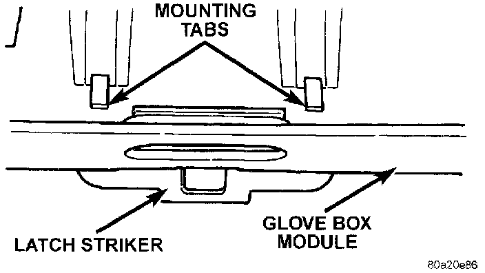

Glove Box Latch Striker
REMOVALWARNING: ON VEHICLES EQUIPPED WITH AIRBAGS, REFER TO AIR BAGS AND SEAT BELTS/AIR BAGS BEFORE ATTEMPTING STEERING WHEEL, STEERING COLUMN, OR INSTRUMENT PANEL COMPONENT DIAGNOSIS OR SERVICE. FAILURE TO TAKE THE PROPER PRECAUTIONS COULD RESULT IN ACCIDENTAL AIRBAG DEPLOYMENT AND POSSIBLE PERSONAL INJURY.
1. Remove the glove box module as described.
Glove Box Latch Striker Remove/Install:

2. From the top of the glove box module, straighten the two mounting tabs that secure the striker to the module.
3. Pull the latch striker out from the upper glove box opening.
4. To install the latch striker, insert the mounting tabs through the slots in the upper glove box opening and bend the tabs over from the top of the glove box module.